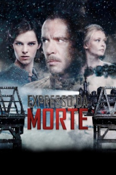

Expresso Da Morte (2010)



Avaliação (TMDb):


5.8/10 (31 votos)
Avaliação (Usuário):
Outro Título:Kray (Título Original)
País:Russia, 115 minutos
Idiomas falados:Português, Russo
Gênero(s):Drama
Diretor(s):Alexey Uchitel
Codec:MPEG-2 (DVD)
Número: 1435
Sinopse:
A ação se passa logo após o final da Segunda Guerra Mundial, no interior da Sibéria, onde os russos e alemães, tem de conviver lado a lado, em uma terra desolada e doente, depois de terem suas vidas transformadas após a guerra.
Elenco:
Vladimir Mashkov, Anjorka Strechel, Yulia Peresild, Sergey Garmash, Aleksey Gorbunov, Vyacheslav Krikunov, Aleksandr Bashirov, Evgeniy Tkachuk, Vladas Bagdonas, Anna Ukolova
Tipo de mídia: DVD5,
Legendas: Português
Alugado: Não
Tela: 1.85:1